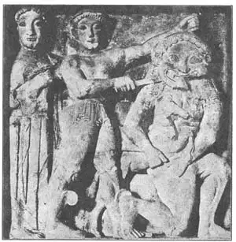
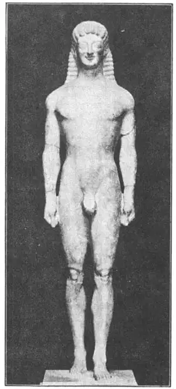

35
MARBLES
大理石雕像

WHEN I was a boy I once overheard my father talking with a friend about marbles.“You know,” said my father, “the Greeks made the finest marbles in the world.” And his friend answered, “Yes, there is no doubt that the Greek marbles are the finest in the world.”
I wondered why these grown-up men were talking about marbles and I wondered who the Greeks were who made such fine marbles and where I could get some, for I had some very fine marbles myself—moonies and agates. I didn’t learn till later that they were not talking about marbles to play with, but about statues that the Greeks made out of marble long before Christ was born. People call them simply marbles instead of marble statues.
Greece was a little bit of country in the Mediterranean Sea and still is a little bit of country. But the Greeks who were and the Greeks who are now are not the same.
The old Greeks believed in fairy-tale gods and goddesses and heroes and made up fairy-tale stories about them—mythology, we call it. Then the Greeks made beautiful statues of their gods as they supposed the gods looked and acted, and no one since has been able to make as beautiful sculpture. Sculpture is one of few things that we can’t do much better than they did.
The Egyptians usually made their statues of granite, which was too hard. The Assyrians made theirs of alabaster, which was too soft. But the Greeks made theirs of marble, which was just right. One reason they made such beautiful statues was because they had such beautiful marble to make them of—just the right material.
In Greece there were several places—quarries, we call them—where the finest marble in the world was found. One was a mountain called Pentelicus, another an island called Paros. There is still plenty of marble from Pentelicus and Paros, but there is no Greek or other person now living who can make it into such sculpture as these Greeks who lived two thousand years ago. It takes more than good marble to make a good statue.
But the Greeks did not start off making beautiful statues in the beginning. The first and oldest piece of Greek sculpture we have is of two lions over a stone gateway at a place called Mycenae.
These lions have lost their heads. But even with the heads they once had, they could not have been any finer than some of the Assyrian lions cut in alabaster.
One of the next oldest pieces of Greek sculpture looks almost like something a child might have done, but that is to be expected, for it was made when Greece was a child. It tells a story, however, very well—the Greeks’ story of Perseus and Medusa.
Medusa was a beautiful girl who committed a terrible sin against the Goddess of Wisdom, whose name was Athene. Athene, to punish Medusa, turned her into a horrible looking creature and turned the locks of her hair into snakes that writhed and twisted about her face. So terrible was Medusa’s face that any one who looked at her was turned into stone. A young hero named Perseus was dared by an enemy of his to go and cut off Medusa’s horrible head. The goddess Athene, who was a friend of Perseus, went with him and led him to Medusa. When he came to the place where Medusa lay asleep, he looked away and cut off her head with one stroke and out sprang a winged horse called Pegasus.

No.35-1 PERSEUS AND MEDUSA（珀加索斯和美杜莎）
In the picture, Perseus is shown cutting off Medusa’s head as he looks away. Medusa clasps Pegasus in her arms. Athene, on the other side, looks more like a man than a girl, and though she is facing front, her foot is twisted sideways in order that it may be inside the picture. Medusa’s right leg is longer than the left, for the left leg is very short from the knee up. If yon can imagine how she would have looked if she had stood up, then you can see better how much shorter one leg is than the other. Pegasus is a tiny toy horse and his hind legs are like those of a kangaroo—much longer than his front legs.
The Lion Gateway and Perseus are both in high relief, but here is a statue in the full round that was made later. It is called the Apollo of Tenea. Apollo was the Greek Sun God and was supposed to be the handsomest of all the gods, but this statue of him may not make you think him beautiful.
The Greeks of those days thought the human body the most beautiful thing in the world. They tried to make their own bodies beautiful by physical training—sports and exercises and healthful living —and they made statues of their mos! famous athletes.
We often say nowadays of some splendid looking athletic fellow, “He is a perfect Apollo.” This statue probably is not Apollo at all, but just the figure of an athlete—a runner or a jumper. He is not beefy like the Assyrians or skinny like the Egyptians, but the face has a peculiar expression, the hair is primly crimped, and the eyes seem to bulge. But this is one of the first statues we have that seems to be smiling. Perhaps the man has just won a race.
This early or “archaic” sculpture, as it is called, is interesting, but from now on the Greek statues are not only interesting but really beautiful.

No.35-2 APOLLO OF TENEA（特内亚的阿波罗）
【中文阅读】
我小时候，有一次听到父亲和他朋友谈论大理石。“你知道吗？希腊人制作的大理石是世界上最好的。”爸爸说。他朋友回答：“是啊，希腊人制作的大理石毫无疑问是世界上最棒的。”
可我却疑惑，为什么大人们要谈论大理石呢？我不知道能制作精致大理石的希腊人是些什么人？我能从哪儿得到一些呢？因为我自己也收藏了一些好看的大理石，如月亮石和玛瑙。后来我才知道他们谈论的其实并不是我平时玩的那种大理石，而是公元前希腊人用大理石刻的雕像。人们通常把这些大理石雕像简称为大理石。
希腊是位于地中海沿岸的一个小国，到现在也还是很小的一个国家。但是，古代希腊人和现代希腊人却不一样。
古希腊人信仰故事里的诸神和英雄，并为他们编造了许多故事，我们把这些故事称作神话。后来，古希腊人按自己想象中神的模样和行为雕刻了许多漂亮的神像。从那以后，就没有人能刻出这么美的雕像了。虽然我们今天已在许多方面超越了古希腊人，但雕刻却是我们今人无法超越他们的几件事之一。
古埃及人通常用花岗岩做雕像，花岗岩太坚硬；亚述人用雪花石膏做雕像，雪花石膏又太软。但是，希腊人却选择了大理石，因为软硬适中。希腊人能刻出那么漂亮的雕像，其中一个原因是他们的材料好——恰到好处的大理石。
希腊有好几处采石场，在那儿能采到世界上最好的大理石。一处是彭忒里克斯山，另一处是帕罗斯岛。彭忒里克斯山和帕罗斯岛至今还有许多大理石可采，可当今在世的希腊人或其他任何人都不能像两千年前的古希腊人那样，用大理石制作那么优秀的雕刻作品了。要想刻出好的雕像，仅有漂亮的大理石还是远远不够的。
但古希腊人也不是一开始就能刻出精美的雕像。我们现在拥有的最早也是最古老的希腊雕刻作品是两座狮子像。它们安放在一个叫迈锡尼地方的石头门道上。
两座狮子像的头部已经丢失了。不过，即使狮子像的头部保存完好，它们也不见得比亚述人用雪花石膏刻出的狮子像好看多少。
希腊第二古老的雕刻作品看起来就像孩童刻的东西一样。不过，这也是意料中的事，因为那时的希腊本就是一个未成年的小孩。然而，这件作品却向我们讲述了一个故事——希腊神话中帕尔修斯和美杜莎的故事。
美杜莎是个漂亮的女孩，却得罪了智慧女神雅典娜。雅典娜为了惩罚她，把她变成了一个奇丑无比的怪物，并把她的秀发变成了蛇盘绕整个脸面。美杜莎的脸实在太可怕了，人们一看到她就会变成石头。有个叫帕尔修斯的年轻英雄，面对敌人的挑战，要去把美杜莎那吓人的头砍下。雅典娜女神是帕尔修斯的朋友，于是就带他一起去找美杜莎。帕尔修斯到达美杜莎睡觉的地方，把脸一歪，举刀就砍下了美杜莎的头，一匹长着翅膀的马飞跳出来，这马名叫珀加索斯。
图35-1展示的是帕尔修斯斜着脸，砍下美杜莎头颅的情景。美杜莎两手抱着珀加索斯。另一边的雅典娜看来更像男人，而不像少女。尽管雅典娜面朝前，但双脚却侧扭着，这样可以呈现在画面里。美杜莎的右腿比左腿要长一点，这是因为她左腿膝盖以上的部分很短。如果想象一下她站起来的样子，那么就能更清楚地看到她的一条腿要比另一条腿短多少了。珀加索斯像个小玩具马，后腿比前腿长很多，像袋鼠。
门道的狮子像和帕尔修斯像都是深浮雕。下面介绍一尊圆浮雕像。这像叫做《特内亚的阿波罗》，是后期的作品。阿波罗是希腊的太阳神，据说他是所有神中长相最俊美的。但如果看到他的雕像，可能会觉得他并不怎么英俊。
那时的希腊人认为人体是世界上最美的东西。他们试着通过体育锻炼和健康的生活方式使自己的形体变美。他们还为当时一些著名的运动员刻了雕像。
今天，我们经常称赞那些长相出众的运动员，说“他真像阿波罗那样完美”。或许这座雕像根本就不是阿波罗，而仅仅是一名运动员——跑步或跳高运动员。他虽然不像亚述雕像那么健壮，也不像埃及雕像那么精瘦，但是，他脸上却带着一种特别的表情，头发不自然地卷曲着，眼睛似乎要鼓出来。而这却是我们最早拥有的看上去在微笑的雕像之一。这人好像刚刚赢了一场比赛吧。
这座早期的或说“古老的”雕刻可算得上充满趣味呀。不过从那以后，希腊雕像就不仅仅是有趣了，而的确是美观了。